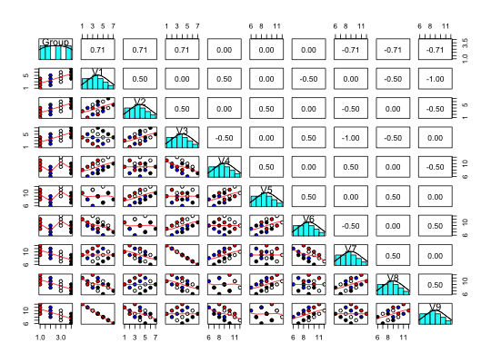

A demonstration that a correlation may be decomposed to a within group correlation and a between group correlations and these two correlations are independent. Between group correlations are sometimes called ecological correlations, the decomposition into within and between group correlations is a basic concept in multilevel modeling. This data set shows the composite correlations between 9 variables, representing 16 cases with four groups.
data(withinBetween)
A data frame with 16 observations on the following 10 variables.
GroupAn example grouping factor.
V1A column of 16 observations
V2A column of 16 observations
V3A column of 16 observations
V4A column of 16 observations
V5A column of 16 observations
V6A column of 16 observations
V7A column of 16 observations
V8A column of 16 observations
V9A column of 16 observations
Correlations between individuals who belong to different natural groups (based upon e.g., ethnicity, age, gender, college major,or country) reflect an unknown mixture of the pooled correlation within each group as well as the correlation of the means of these groups. These two correlations are independent and do not allow inferences from one level (the group) to the other level (the individual). This data set shows this independence. The within group correlations between 9 variables are set to be 1, 0, and -1 while those between groups are also set to be 1, 0, -1. These two sets of correlations are crossed such that V1, V4, and V7 have within group correlations of 1, as do V2, V5 and V8, and V3, V6 and V9. V1 has a within group correlation of 0 with V2, V5, and V8, and a -1 within group correlation with V3, V6 and V9. V1, V2, and V3 share a between group correlation of 1, as do V4, V5 and V6, and V7, V8 and V9. The first group has a 0 between group correlation with the second and a -1 with the third group.
statsBy can decompose the observed correlation in the between and within correlations. sim.multilevel can produce similar data.
The data were created for this example
P. D. Bliese. Multilevel modeling in R (2.3) a brief introduction to R, the multilevel package and the nlme package, 2009.
Pedhazur, E.J. (1997) Multiple regression in behavioral research: explanation and prediction. Harcourt Brace.
Revelle, W. An introduction to psychometric theory with applications in R (in prep) Springer. Draft chapters available at http://personality-project.org/r/book/
statsBy, describeBy, and sim.multilevel
data(withinBetween) pairs.panels(withinBetween,bg=c("red","blue","white","black")[withinBetween[,1]], pch=21,ellipses=FALSE)#> Statistics within and between groups #> Call: statsBy(data = withinBetween, group = "Group") #> Intraclass Correlation 1 (Percentage of variance due to groups) #> Group V1 V2 V3 V4 V5 V6 V7 V8 V9 #> 1.00 0.43 0.43 0.43 0.43 0.43 0.43 0.43 0.43 0.43 #> Intraclass Correlation 2 (Reliability of group differences) #> Group V1 V2 V3 V4 V5 V6 V7 V8 V9 #> 1.00 0.75 0.75 0.75 0.75 0.75 0.75 0.75 0.75 0.75 #> eta^2 between groups #> V1.bg V2.bg V3.bg V4.bg V5.bg V6.bg V7.bg V8.bg V9.bg #> 0.5 0.5 0.5 0.5 0.5 0.5 0.5 0.5 0.5 #> Correlation between groups #> V1.bg V2.bg V3.bg V4.bg V5.bg V6.bg V7.bg V8.bg V9.bg #> V1.bg 1 #> V2.bg 1 1 #> V3.bg 1 1 1 #> V4.bg 0 0 0 1 #> V5.bg 0 0 0 1 1 #> V6.bg 0 0 0 1 1 1 #> V7.bg -1 -1 -1 0 0 0 1 #> V8.bg -1 -1 -1 0 0 0 1 1 #> V9.bg -1 -1 -1 0 0 0 1 1 1 #> Correlation within groups #> V1.wg V2.wg V3.wg V4.wg V5.wg V6.wg V7.wg V8.wg V9.wg #> V1.wg 1 #> V2.wg 0 1 #> V3.wg -1 0 1 #> V4.wg 1 0 -1 1 #> V5.wg 0 1 0 0 1 #> V6.wg -1 0 1 -1 0 1 #> V7.wg 1 0 -1 1 0 -1 1 #> V8.wg 0 1 0 0 1 0 0 1 #> V9.wg -1 0 1 -1 0 1 -1 0 1 #> #> Many results are not shown directly. To see specific objects select from the following list: #> mean sd n F ICC1 ICC2 ci1 ci2 raw rbg pbg rwg nw pwg etabg etawg nwg nG Call